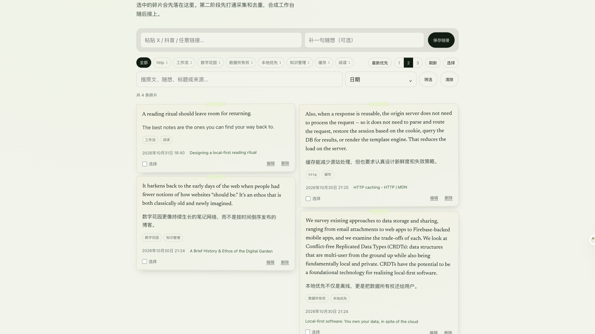
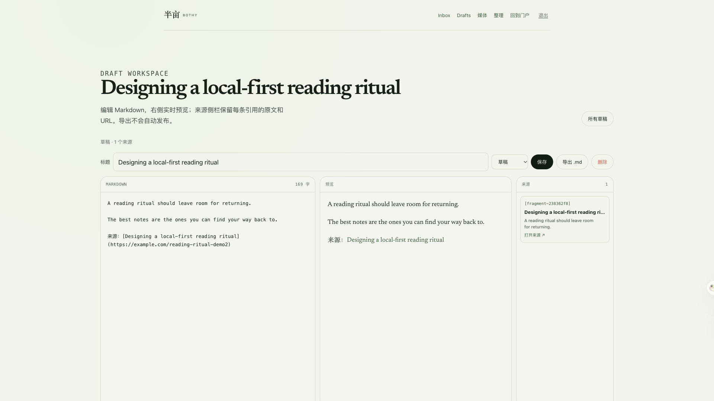
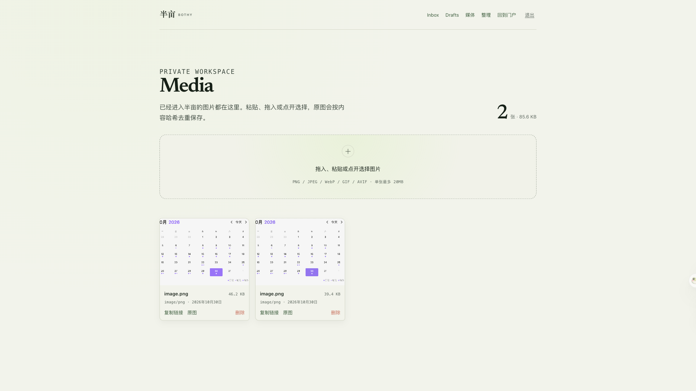

Save less.
Return more.
Capture a quote, a link, a screenshot. Then decide what deserves to stay.
Bothy / 半亩 · private knowledge portal
“A reading ritual should leave room for returning.”
From a browser selection
“Local-first software: you own your data, in spite of the cloud.”
Saved with its source
A calendar, a sketch, a page worth keeping.
Content-addressed media
The problem
isn’t capture.
It’s return.
We save for a future self who never gets the file.
SAVED · NOT RETURNED“A reading ritual should leave room for returning.”
Local-first software, and the long way home.
A calendar, a sketch, a page worth keeping.
One inbox.
Not a feed.
A private place for the things you mean to keep. No audience. No algorithm.
PRIVATE BY DEFAULTYour inbox
From anywhere
you read.
A selection, a whole page, a link, an image. The source comes along.
CHROME · OBSIDIAN · UTOOLSto 半亩
Keep the source, leave the noise.
# 数字花园
Or a quote. Or a file.
→ 半亩 / inbox

Everything keeps
its source.
The URL, the title, the site, the moment you saved it. One private list, not a pile of orphans.
NO FEED · NO AUDIENCE
AI suggests.
You decide.
A summary, a few tags, a duplicate. Apply what helps; ignore the rest. Nothing is rewritten behind your back.
SUMMARY · TAGS · DUPLICATESDelete is not
a database
operation.
The card curls, the embers lift, and the inbox gets lighter.
REMOVE · WITH A LITTLE CEREMONY“It harkens back to the early days of the web when people had fewer notions of how websites ‘should be.’”
A fragment
becomes a draft.
The source and citation come with it. Write in Markdown. Export the file.
MARKDOWN · CITATIONS · EXPORT
Files, not
attachments.
Content-addressed. One copy, many references. The media library is a directory you can open.
SHA256 · CONTENT ADDRESSED
Private
by default.
No analytics. No ads. No feed. One small server, behind a login. Just your own archive, on your own terms.
ONE SMALL SERVER · YOURSNo growth loop.
No place to perform.
A backup
you can
open.
Every night: a SQLite snapshot, a media archive, a manifest. One command pulls it home. Restoring is boring.
NOT A SERVICE YOU HOPE STAYS ONLINE├── portal.sqlite
├── media.tar.gz
└── manifest.json
sha256: 7f9c…c1a2
PRAGMA integrity_check → ok
Make a little room
for what matters.
A private place for what you keep.
Save less. Return more.